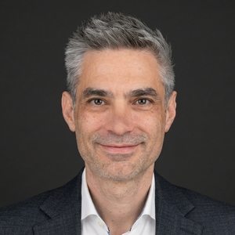
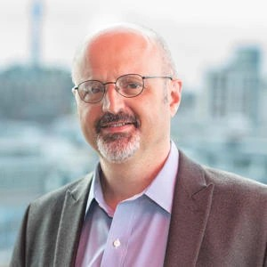
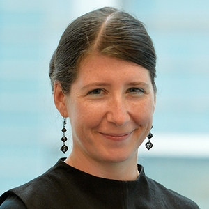
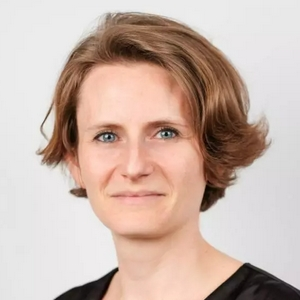
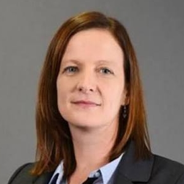
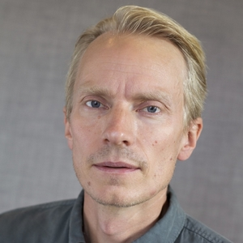

Fostering intersectoral dialogue on inherited inequalities.
The Equality of Opportunity and Social Mobility Policy Workshop will bring together academics, policymakers, and practitioners to explore cross-sectoral responses to the challenges posed by inherited inequalities.
Across a rich two-day programme at the London School of Economics, policy insight, practical experience, and research-frontier knowledge will interweave to help shape the future of the field.
This event is organised by the International Inequalities Institute at the London School of Economics, in partnership with the Economic Commission for Latin America and the Caribbean, the European Bank for Reconstruction and Development, the Inter-American Development Bank, the Organisation for Economic Co-operation and Development, and the World Bank.
This event was made possible thanks to funding from the Atlantic Fellows for Social and Economic Equity (AFSEE) programme.
London School of Economics · Houghton Street, London WC2A 2AE






Contact: l.a.sirugue@lse.ac.uk